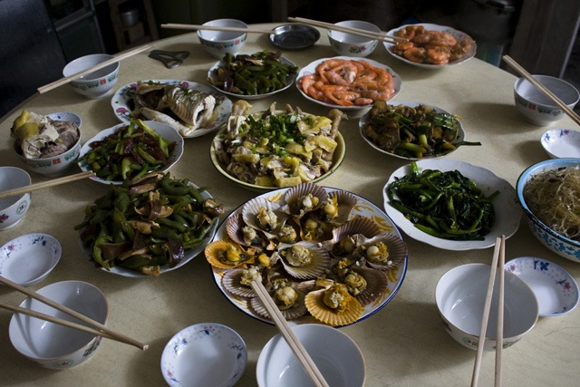
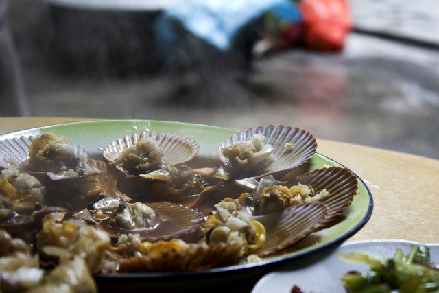

今年回家的票买晚了一天，所以大年三十，大部分人开始在家吃团圆饭，看电视的时候，我还在火车上。回来很多人问是否那天火车上有免费餐可以吃，我说没有。这就是国内这些个电视台，天天在新闻里作秀的结果。大家竟然都觉得火车应该有免费年夜饭可吃，我跟他们说那天晚上火车上的盒饭，还是一样是15块，一点折扣都不打。不过呢，那天傍晚的时候，一队乘务员排队向每个车厢的乘客拜年，有几个还拿着暖壶，关切地问各位乘客是否需要热水。走在前面的两个乘务员手里拿着数码相机，一顿狂照。但由于当时乘客已经不多，而且车厢一头本来就有热水可打，大家都没觉得有什么倒热水的需要。大年初一才回到乡下奶奶家，大家一起吃了团圆饭。虽说是乡下小地方，没什么大饭店大酒店。但这顿饭也算够丰盛的，而且还是自己家做的饭吃的痛快，终于补回了我一顿年夜饭。 回到北京也几天了，照片都没整理玩，就要准备开始搬家了。新家是师弟伟伟家的房子，除了价格给我们算便宜了点外，她妈妈还免了我们半个月的房租，真有点不好意思了。这一年开始，就事多，接下来还有很多计划要去实施。希望新的一年，多遇到些像伟伟一家这样的好人。